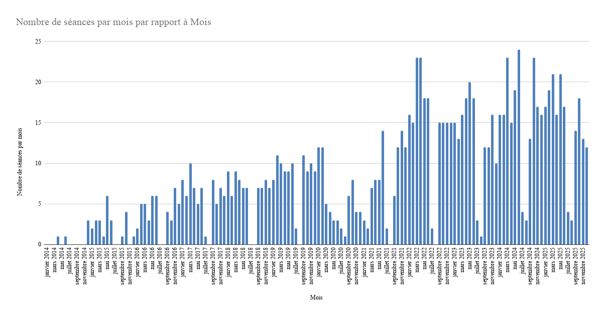
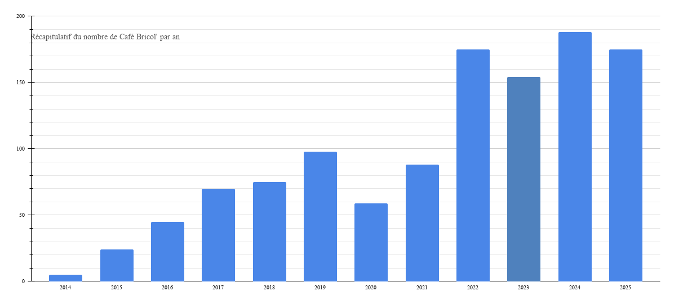

Le réseau des Café Bricol' de la région Toulousaine coordonne les actions des structures impliquées dans la réparation, particulièrement celle du petit électro-ménager. Ces structures sont très diverses, et la vôtre peut également rejoindre le réseau. N'hésitez pas à nous solliciter pour vous aider, dans la mesure de nos moyens.
Depuis 10 ans, nous avons accumulé de l'expérience. Voici un résumé en graphiques de nos rendez-vous, par mois et par an.


Cela représente plus de 1000 séances au 1er novembre 2024.
Café Bricol' n'a pas d'existence légale, c'est l'association Toulouse en Transition qui porte le réseau depuis le début et qui permet son interaction avec les institutions.
Café Bricol' fait partie du Collectif Chemin Faisant qui regroupe des associations toulousaines d’éducation à l’environnement et à l’écologie, expertes dans leur domaine.